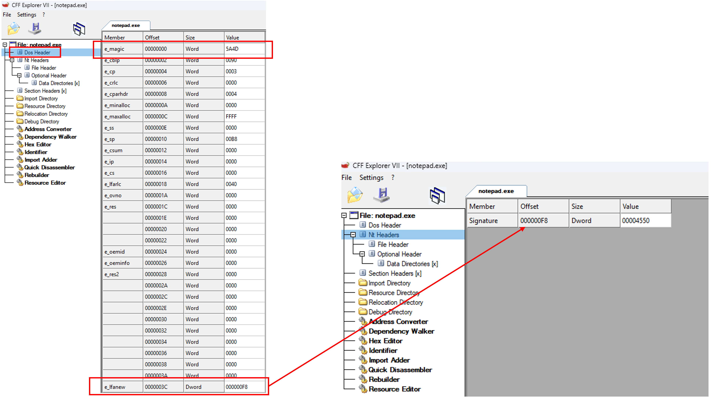
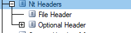
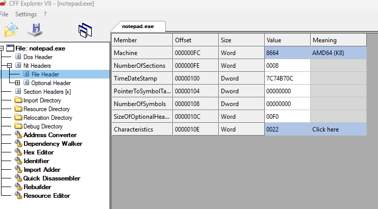
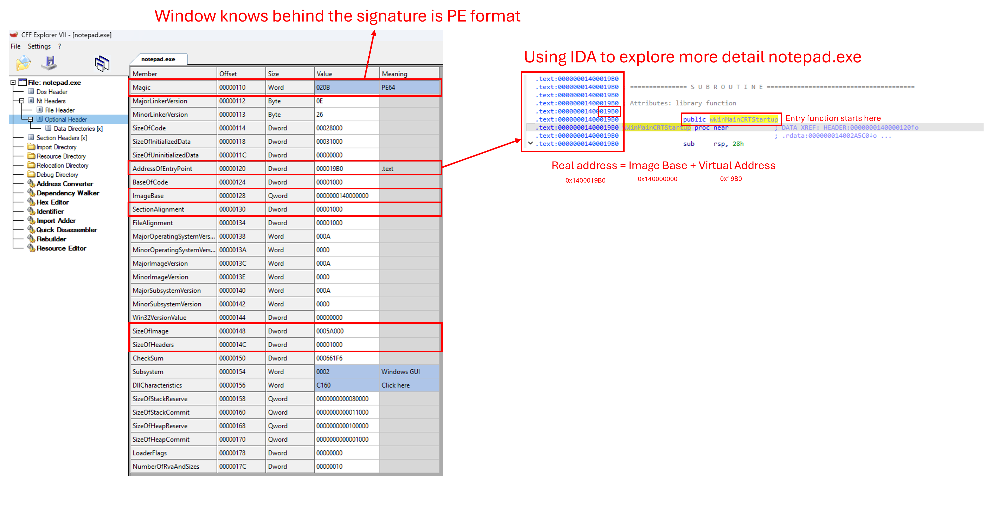
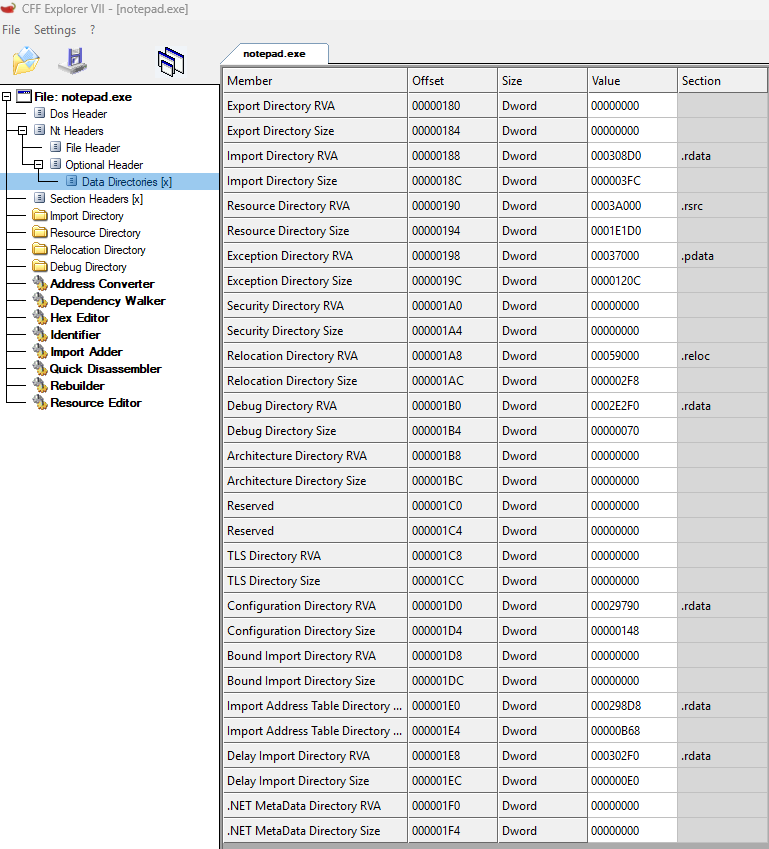
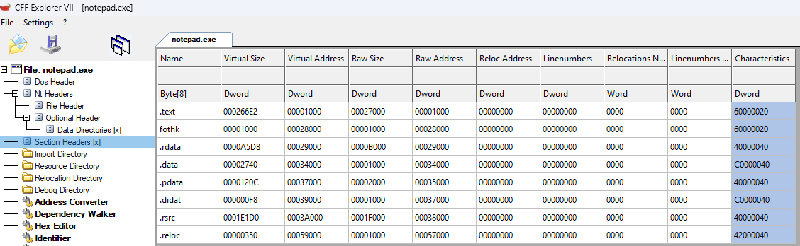

So...What is PE?
PE format (Portable Executable format) In Windows, the PE format is used to load and run programs. Simply put, PE helps Windows understand: The program's code (app) Data Which DLLs to load The Entry Point (starting memory address, indicating which code to run first) Take a look at the picture below:Detailed Breakdown of PE format
DOS Header starts at the first byte of the file (0x0000)
-
Signature = 0x5A4D (first 2 bytes 0x0000 and 0x0001). 0x5A4D
stands for Mark Zbikowski (Microsoft engineer)
MZ is the signature for Windows executable files
- Pointer to PE Header (offset 0x3C = e_lfanew), pointing to the PE Header.
DOS STUB contains a string:
- This program cannot be run in DOS mode

NT Header which contains:
- PE Signature
-
File Header
- Machine: Indicates the target CPU architecture (32-bit or 64-bit).
- NumberOfSections: Specifies how many sections are defined in the Section Header table.
- TimeDateStamp: Records the compilation time of the file.
- PointerToSymbolTable: Offset to the symbol table, mainly used in .obj files (set to 0 for .exe and .dll).
- SizeOfOptionalHeader: Defines the size of the Optional Header. This value is used to locate the Section Header by calculating: e_lfanew + 4 (PE Signature) + 20 (File Header) + SizeOfOptionalHeader.
- Characteristics: Contains flags that inform the Windows kernel whether the file is an executable (.exe) or a dynamic link library (.dll).
-
Optional Header
- Magic: Defines PE type (0x10B - 32-bit or 0x20B - 64-bit)
- Major/MinorLinkerVersion: Linker version
- SizeOfCode: Size of the code section (.text)
- SizeOfInitializedData: Total size of .data and .rdata
- SizeOfUninitializedData: Total size of .bss
- AddressOfEntryPoint (RVA): Entry point address
- BaseOfCode (RVA): Code section address
- BaseOfData (RVA): Data section address (only in PE32)
- ImageBase: Memory load address
- SectionAlignment: Memory allocation alignment
- FileAlignment: File section alignment
- Version Info: OS and subsystem versions
- SizeOfImage: Total image size in memory (includes headers, sections, padding)
- Checksum: Image checksum (mandatory for .sys files)
- Subsystem: Determines if it's GUI or console
- DllCharacteristics: Security and loading behavior flags (e.g., ASLR)
- Stack/Heap Reserve & Commit Sizes
- NumberOfRvaAndSizes: Data Directory entries (usually 16)
-
Data Directories
- Import Table: List of DLLs and APIs
- Export Table
- Resource Table
- Base Relocation Table
Section Headers which contains a lot of detailed information about file
- Name
- Virtual Size
- Virtual Address
- ...
That is briefly about PE definition. Ok let's see how it works in practice
Overview:
This practice will explore PE (Portable Executable) ofnotepad.exe
Tool: CFF Explore
Let's take a look at the picture below and explore more.

First part of this PE is DOS Header. The main porpose of this header
is to act as an standard identifier. The first line is
e_magic
which, as I explained above is the MZ signature mark this file as an executable file And the Second important thing ise_lfanew
which point to the signature ofNT Header
Move next step to NT Header

Inside the NT Header is
File Header
and Optional Header . See what inside the File HeaderFile Header

- Machine: Let the window know the type of this machine is AMD64 (K8). AMD64 64-bit extension to the x86 instruction set architecture
- NumberOfSections: The number of section in Section Header
- TimeDateStamp: Time file executed
Optional Header

The main purpose of Optional Header in a PE is to provide crucial
information that the Window loader uses to properly load and execute
the program. The breakdown more information is following as
below:
- Magic: This is a signature of the PE. This lets window knows behind this signature is a PE Format
- AddressOfEntryPoint is the virtual address where execution starts. When the program is loaded into memory by the Windows loader, the loader adds this virtual address to the ImageBase to calculate the actual memory address where execution begins.
- ImageBase: This is the preferred load address of the PE in memory
- SectionAlignment: This is the alignment of sections in memory
- FileAlignment: This is the alignment of sections in the file
- SizeOfImage: This is the total size of the PE in memory
- SizeOfHeaders: This is the combined size of the PE headers
- Subsystem: This indicates the required subsystem for the PE to run
- DllCharacteristics: This contains flags that specify various attributes of the PE
- Data Directories: This is an array of structures that provide important information about various tables and resources used by the PE. Each entry in the Data Directory corresponds to a specific type of data, such as the Import Table, Export Table, Resource Table, and Base Relocation Table.
Data Directories

Data Directories are a table within the Optional Header that
describes the locations of important data structures in memory. Their
purpose is to inform the Windows loader where these structures are
stored and their sizes, instead of including them directly in the
headers.
Common Data Directories
- Export Table: Contains exported functions
- Import Table: Lists imported DLLS and functions
- Resource Table: Store resources like icons, dialogs, and strings
- Base Relocation Table: Used for address relocation
- Exception Table: Holds exception handling data
- ...
Each IMAGE_DATA_DIRECTORY entry includes its virtual address and size
Section Header

The main purpose of section header in a Portable Executable (PE) file
is to provide metadata that describes how different sections of the
executable are structured and laid out in memory. Each section
contains a specific type of data or code, and the section headers help
the Windows loader and other tools understand how to properly map and
load these sections into memory.
That's all for the PE format (personally)...